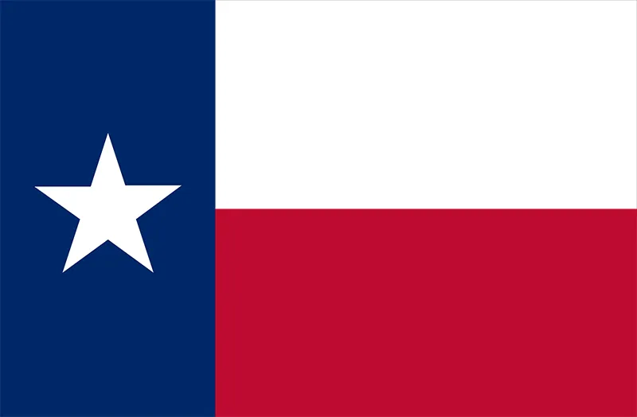
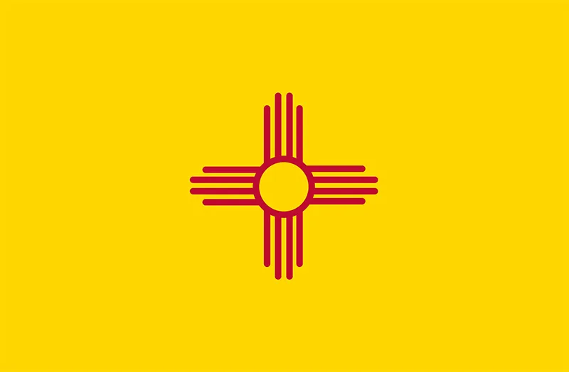

| Texas  |
Texas is a state in the South Central region of the United States. At 268,596 square miles, and with more than 29.5 million residents in 2021, it is the second-largest U.S. state by both area and population. Texas is home to many large universities and points of interest including Big Bend Natinal Park and the Alamo. |
Some fun activities:
|
Arizona  |
Arizona, a southwestern U.S. state, is best known for the Grand Canyon, the mile-deep chasm carved by the Colorado River. Flagstaff, a ponderosa pine–covered mountain town, is a major gateway to the Grand Canyon. Other natural sites include Saguaro National Park, protecting cactus-filled Sonoran Desert landscape. |
Some fun activities:
|
| New Mexico  |
New Mexico is the fifth-largest areawise of the fifty states, but with just over 2.1 million residents, ranks 36th in population and 46th in population density. Its climate and geography are highly varied, ranging from forested mountains to sparse deserts; the northern and eastern regions exhibit a colder alpine climate, while the west and south are warmer and more arid. |
Some fun activities:
|